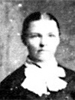
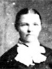

Jens and Ane Pedersen Andersen Family Group
Home
Histories
Charts
Photos
Maps
Restricted
News
Info
Contact
 symbol is a link to a history,
symbol is a link to a history,  a source, and the chart
a source, and the chart  symbol is a link to a family group chart.)
symbol is a link to a family group chart.)|
Husband's Parents Anders Larsen |
----> |
 
|
Jens Andersen Born 7 Jan. 1822 Ørslev, Holbaek, Denmark Died 21 Oct. 1855 Fillmore, Millard, Utah Ane Pedersen (or Anna Jorgensen) Born 8 Mar. 1824 Sønderup, Sorø, Denmark Died 28 July 1920 Oak City, Millard, Utah Married 1 Dec. 1846 Taarnborg, Sorø, Denmark She later married John Lovell on 4 Apr 1857. |
|
Wife's Parents Peder Jorgensen |
 1 1 2 2 |
Anders Peter Anderson 10 Dec. 1847 - 9 Apr. 1932 Married Martha Ann Lovell 14 Apr. 1873 Married Annie Lyman 9 Oct 1882 The 1st child of Jens and Ane Pedersen Andersen |
 |
Christian Anderson 19 Feb. 1853 - 3 Oct. 1876 Married Ane Cathrine Christensen 17 Apr. 1871 NOTE: a photo including the children of Christian and Ane Catherine is included in the history of Joseph Smith Anderson, next in this list. The 2nd child of Jens and Ane Pedersen Andersen |
 12 12 |
Joseph Smith Anderson<-Click here for family photos 3 Oct. 1855 - 6 May 1925 Married Anne Margret Nielson 6 Dec 1875 Married Ane Cathrine Christensen 6 Mar. 1879
The 3rd child of Jens and Ane Pedersen Andersen |